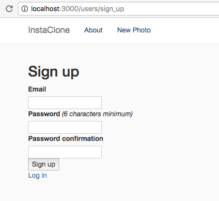
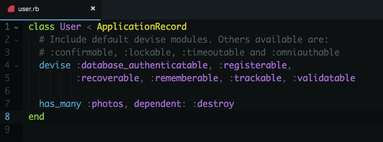

<div class="home">
  <div class="content">
    <h1 class="page-heading text-underline">Add User Authentication With Devise</h1>

    <p>
      <em>Created by Piotr Steininger, @polishprince.</em>
      <br>
      <em>Compiled for Rails Girls MY by Faezrah, <a href="https://twitter.com/railsgirlskl">@railsgirlskl</a></em>
    </p>

    <h4>This guide assumes that you have already built a Rails Girls app by following <a href="/guide-extended/">the extended app guide</a>.</h4>

    <h2 id="add-basic-user-authentication"><em>1.</em>Add Basic User Authentication</h2>

    <p>Now that you have a basic instagram clone, it would be nice if there is a way to let users sign up and sign in.</p>

    <p>To do this, we need to install an additional gem to help us handle the user registration process.</p>

    <h2 id="add-and-setup-devise-in-your-app"><em>2.</em>Add and Setup Devise In Your App</h2>

    <p>Open <code>Gemfile</code> and add this line:</p>

    {% highlight erb %}
    gem 'devise'
    {% endhighlight %}

    <p>Next run this in the terminal:</p>

    {% highlight sh %}$ bundle install{% endhighlight %}

    <p>Once it's done, still in the terminal, run:</p>

    {% highlight sh %}$ bin/rails g devise:install{% endhighlight %}

    <p>This command will generate everything we need to handle the registration flow.</p>

    <p>Restart the Rails server if everything works well.</p>

    {% highlight sh %}$ bin/rails server{% endhighlight %}

    <h2 id="configure-devise"><em>3.</em>Configure Devise</h2>

    <p>Open up <code>config/environments/development.rb</code> and add this line:</p>

    {% highlight erb %}config.action_mailer.default_url_options = { host: 'localhost', port: 3000 }{% endhighlight %}

    <p>This ensures you have defined default url options in your environments files.</p>

    <p>Next, open up <code>app/views/layouts/application.html.erb</code> and type:</p>

    {% highlight erb %}
    <% if notice %>
      <p class="alert alert-success"><%= notice %></p>
    <% end %>
    <% if alert %>
      <p class="alert alert-danger"><%= alert %></p>
    <% end %>
    {% endhighlight %}

    <p>Before this line:</p>

    {% highlight erb %}<%= yield %>{% endhighlight %}

    <p>This code will display alerts and notices for our application, to slightly improve user experience.</p>

    <p style="font-weight: bold;">Mentor: Talk a little bit about user authentication and Devise.</p>

    <h2 id="setup-user-model"><em>4.</em>Setup User Model</h2>

    <p>Because we want to save users to our database, we need to create a model to handle just that.</p>

    {% highlight sh %}$ bin/rails g devise user {% endhighlight %}

    <p>Remember we need to run a migration to tell Rails save the changes in the database.</p>

    {% highlight sh %}$ bin/rails db:migrate {% endhighlight %}

    <p style="font-weight: bold;">Mentor: Explain what user model has been generated. What are the fields?</p>

    <h2 id="create-your-first-user"><em>5.</em>Create Your First User</h2>

    <p>Now that you have set everything up you can create your first user. Devise creates all the code and routes required to create accounts, log in, log out, etc.</p>

    <p>Make sure your rails server is running, open <a href="http://localhost:3000/users/sign_up">http://localhost:3000/users/sign_up</a> and create your user account.</p>

    <p style="font-weight: bold;">Checkpoint: If everything works well, your sign-up should look something like this:</p>

    

    <h2 id="add-signup-and-login-links"><em>6.</em>Add Sign-up And Login Links</h2>

    <p>All you need to do now is to add appropriate links or notice about the user being logged in in the top right corner of the navigation bar.</p>

    <p>In order to do that, open <code>app/views/layouts/application.html.erb</code> and type:</p>

    {% highlight erb %}
    <% if user_signed_in? %>
      <li><%= link_to 'Edit profile', edit_user_registration_path %></li>
      <li><%= link_to "#{current_user.email}, logout?", destroy_user_session_path, method: :delete %></li>
    <% else %>
      <li><%= link_to "Sign up", new_user_registration_path %></li>
      <li><%= link_to "Login", new_user_session_path %></li>
    <% end %>
    {% endhighlight %}

    <p>Make sure you add the code, right after:</p>

    {% highlight erb %}
    <ul class="nav navbar-nav">
      <li><%= link_to "About", photos_path %></li>
      <li><%= link_to "New Photo", new_photo_path %></li>
    </ul>
    {% endhighlight %}

    <p style="font-weight: bold;">Mentor: Talk about the user_signed_in? and current_user helpers. Why are they useful?</p>

    <h2 id="authenticate-user"><em>7.</em>Authenticate User</h2>

    <p>Finally, add a function to force user to sign up or sign in before they can upload photos on our Instaclone application.</p>

    <p>To do that, open up <code>app/controllers/photo_controller.rb</code> and add the following:</p>

    {% highlight erb %}before_action :authenticate_user!, except: [:index, :show]{% endhighlight %}

    <p>After the first line, which is:</p>

    {% highlight erb %}class PhotosController < ApplicationController{% endhighlight %}

    <h2 id="user-and-photo-associations"><em>7.</em>User And Photo Associations</h2>

    <p>Let's think for a moment.</p>

    <p>Now that we have a User model in our application, we can then modify our Photo model so that a signed-in user can upload photos, retrieve their photos, and display their name next to the photos just like Instagram.</p>

    <p>To achieve this, first -- we will need to add an additional column to our Photo model.</p>

    <p>Run this in the terminal:</p>

    {% highlight sh %}$ bin/rails generate migration AddUserIdToPhoto user_id:integer{% endhighlight %}

    {% highlight sh %}$ bin/rails db:migrate {% endhighlight %}

    <p>Now, we need to tell Rails the relationship between the two models.</p>

    <p>Open up <code>app/models/user.rb</code>, and add this code:</p>

    {% highlight erb %} has_many :photos, dependent: :destroy {% endhighlight %}

    <p style="font-weight: bold;">Checkpoint:</p>

    <p>My <code>user.rb</code> looks like this:</p>

    

    <p>Next, in <code>photo.rb</code>, add this code:</p>

    {% highlight erb %} belongs_to :user {% endhighlight %}

    <p>Below:</p>

    {% highlight erb %} mount_uploader :file, PhotoUploader {% endhighlight %}

    <p>We do this because we need to explicitly tell Rails about the associations between the two models, otherwise Rails will return an error.</p>

    <p>Lastly, in <code>app/controllers/photo_controller.rb</code> replace this code:</p>

    {% highlight erb %} @photo = Photos.new(photo_params) {% endhighlight %}

    <p>With:</p>

    {% highlight erb %} @photo = current_user.photos.new(photo_params) {% endhighlight %}

    <p>This code basically means we want to tie the photo with the current user logged-in.</p>

    <p>Now we have the association setup between the two, play around the app to test if it works.</p>

    <p>Lastly, on our <code>app/views/photos/index.html.erb</code>, replace the hard code name to user's email, like so:</p>

    {% highlight erb %}
    <h4 class="name">
      <%= photo.user ? photo.user.email : "RG Kuching" %>
    </h4>
    {% endhighlight %}

    <p style="font-weight: bold;">Mentor: Talk a little bit about model associations in Rails.</p>

    <h2 id="adding-more-features"><em>8.</em>Adding More Features</h2>

    <p>You now have a basic instagram clone application. Next, you can enhance your app by adding comment to photos.</p>

    <p>Go to our <a href="/">Extended Guide Part #3.</a></p>
  </div>
</div>
